Toutes les questions en français
536 questions • 102 images questions • 284 images réponses
Question 1 (ID: 1283)
🔗 Voir en détailQ: Quel risque peut résulter lorsque vous débordez sur un accotement non stabilisé?
Question 2 (ID: 1491)
🔗 Voir en détailQ: Comment procédez-vous pour contourner un obstacle?
Question 3 (ID: 949) 1 image(s)
🔗 Voir en détailQ: Ce signal vous indique:
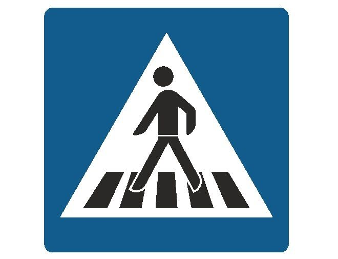
Question 4 (ID: 957) 2 image(s)
🔗 Voir en détailQ: Dans laquelle de ces deux zones les enfants de moins de 13 ans sont-ils autorisés à jouer sur la chaussée?

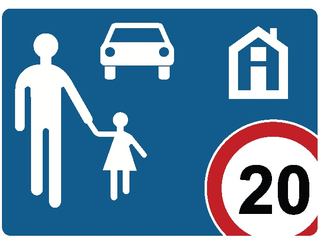
Question 5 (ID: 190) 1 image(s)
🔗 Voir en détailQ: Je circule en premier:

Question 6 (ID: 183) 1 image(s)
🔗 Voir en détailQ: Quelle affirmation est correcte?
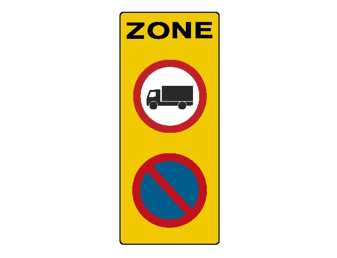
Question 7 (ID: 1023) 1 image(s)
🔗 Voir en détailQ: Avez-vous le droit de franchir ces lignes délimitant les emplacements de stationnement?
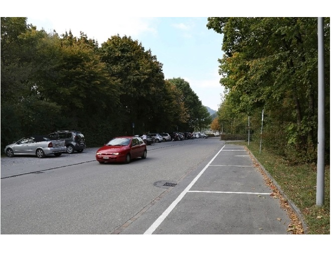
Question 8 (ID: 841) 1 image(s)
🔗 Voir en détailQ: Ce signal est:

Question 9 (ID: 249) 1 image(s)
🔗 Voir en détailQ: À partir de ce signal vous risquez d'être dévié de votre trajectoire:

Question 10 (ID: 913) 1 image(s)
🔗 Voir en détailQ: En sortant de cette zone, vous devez céder la priorité:
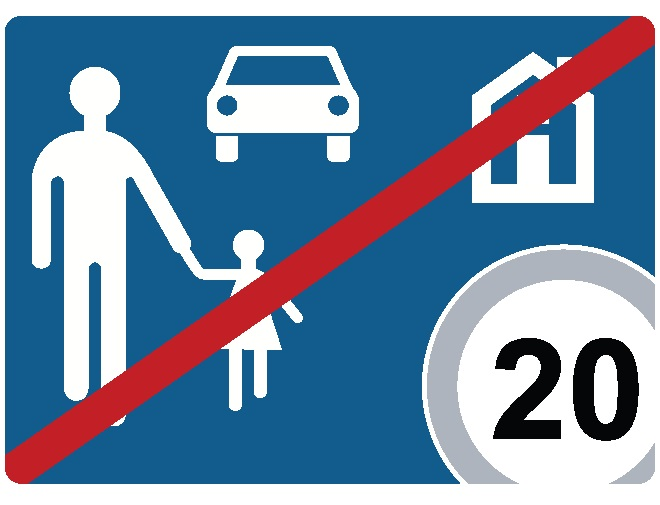
Question 11 (ID: 229) 1 image(s)
🔗 Voir en détailQ: Dans cette rue, vous avez le droit de:
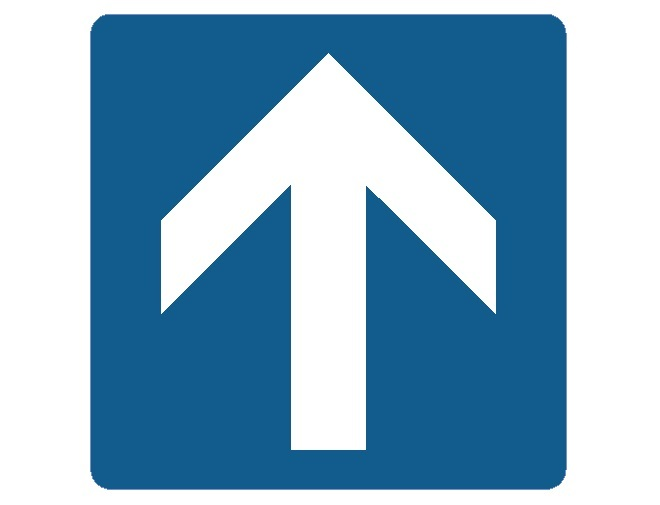
Question 12 (ID: 1444) 1 image(s)
🔗 Voir en détailQ: L'adhérence à la route peut être réduite même par temps sec:

Question 13 (ID: 1294)
🔗 Voir en détailQ: Pour permettre le passage des services d'urgence, les usagers sur l'autoroute doivent laisser libre un couloir central:
Question 14 (ID: 205)
🔗 Voir en détailQ: Où est-il interdit de faire demi-tour?
Question 15 (ID: 1128)
🔗 Voir en détailQ: Lors d'un freinage à fond, vous sentez des pulsations dans la pédale de frein et vous entendez un bruit de broutage. Cela signifie:
Question 16 (ID: 1598) 1 image(s)
🔗 Voir en détailQ: Que signifie ce signal?

Question 17 (ID: 867) 1 image(s)
🔗 Voir en détailQ: A partir de ce signal vous évitez de dépasser un autre véhicule:

Question 18 (ID: 1436) 1 image(s)
🔗 Voir en détailQ: Ce signal vous annonce:
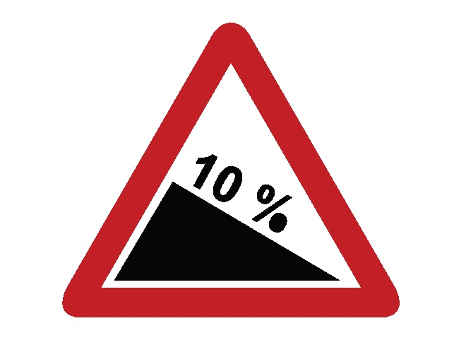
Question 19 (ID: 1265)
🔗 Voir en détailQ: Avez-vous le droit de remorquer un motocycle en panne à l'aide d'une corde ou d'une barre de remorquage?
Question 20 (ID: 20) 1 image(s)
🔗 Voir en détailQ: Dans cette situation dépassez-vous les cyclistes?

Question 21 (ID: 1433) 1 image(s)
🔗 Voir en détailQ: Ce signal est:
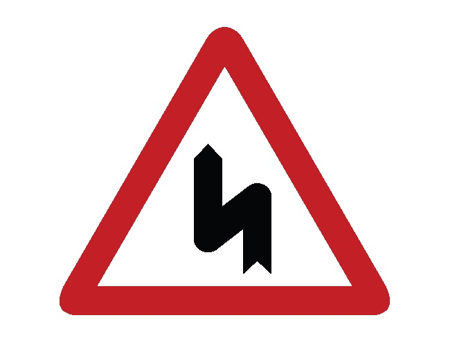
Question 22 (ID: 125) 1 image(s)
🔗 Voir en détailQ: Avez-vous le droit d'accéder à cette route avec un tracteur?
Question 23 (ID: 247) 1 image(s)
🔗 Voir en détailQ: La circulation venant en sens inverse est prioritaire:

Question 24 (ID: 997) 1 image(s)
🔗 Voir en détailQ: Dans cette rue, devez-vous vous attendre à des véhicules venant en sens opposé?

Question 25 (ID: 924) 4 image(s)
🔗 Voir en détailQ: Ce signal met fin au:
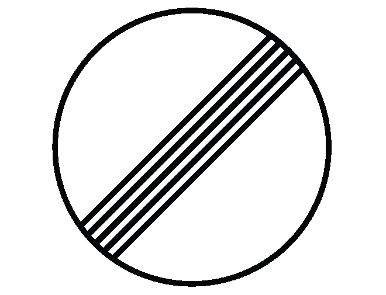


Question 26 (ID: 1514)
🔗 Voir en détailQ: Est-ce que le chargement peut dépasser l'avant de votre véhicule?
Question 27 (ID: 561)
🔗 Voir en détailQ: Si vous tractez une remorque, quelle est la limitation de vitesse en dehors d'une localité?
Question 28 (ID: 1031) 1 image(s)
🔗 Voir en détailQ: Devez-vous céder la priorité aux piétons qui veulent traverser la route?
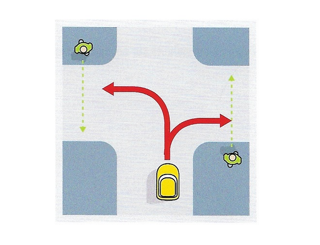
Question 29 (ID: 962) 1 image(s)
🔗 Voir en détailQ: Quelle est la limitation de vitesse dans cette rue?

Question 30 (ID: 1489)
🔗 Voir en détailQ: Si vous suivez un autre véhicule, devez-vous passer des feux de route aux feux de croisement?
Question 31 (ID: 1000) 3 image(s)
🔗 Voir en détailQ: Lequel de ces signaux signifie « Accès interdit aux cyclistes »?

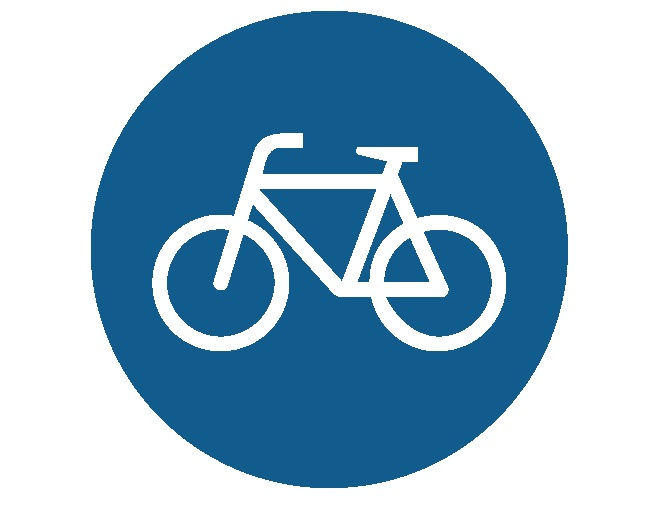

Question 32 (ID: 1478) 1 image(s)
🔗 Voir en détailQ: En présence de ces signaux, le temps de stationnement est limité par:
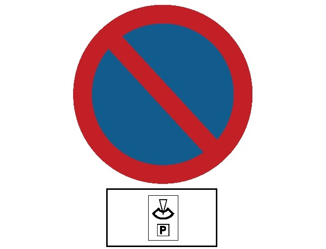
Question 33 (ID: 212)
🔗 Voir en détailQ: De quelle façon pouvez-vous réduire la consommation de carburant de votre véhicule?
Question 34 (ID: 918) 1 image(s)
🔗 Voir en détailQ: A qui devez-vous céder le passage lorsque vous sortez d'une route marquée par ce signal?
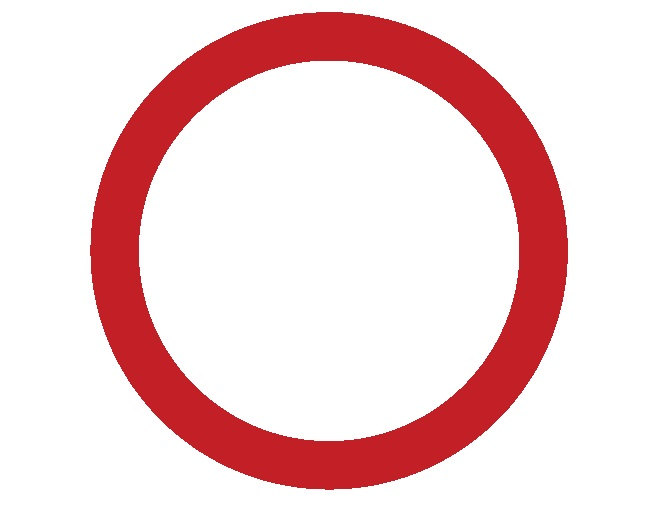
Question 35 (ID: 37) 1 image(s)
🔗 Voir en détailQ: Vous conduisez une voiture. Avez-vous le droit de dépasser un motocycle sans side-car à cet endroit?
Question 36 (ID: 738) 2 image(s)
🔗 Voir en détailQ: Lequel de ces signaux vous interdit l'accès?
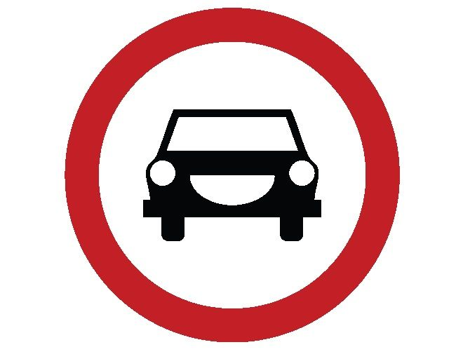

Question 37 (ID: 1113) 1 image(s)
🔗 Voir en détailQ: Que signifie ce signal lumineux pour piétons à la traversée de la voie de tramway ?
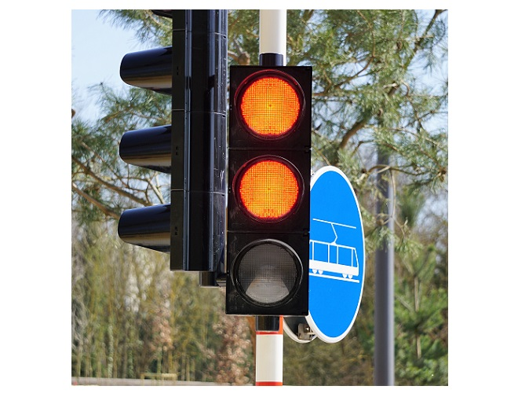
Question 38 (ID: 546)
🔗 Voir en détailQ: Avez-vous le droit de transporter dans votre voiture plus de personnes qu'il y a de places inscrites sur le certificat d'immatriculation?
Question 39 (ID: 151)
🔗 Voir en détailQ: Quel comportement adoptez-vous pour quitter l'autoroute?
Question 40 (ID: 1046)
🔗 Voir en détailQ: Lorsque vous vous approchez d'un embouteillage, l'usage des feux de détresse est:
Question 41 (ID: 1482) 1 image(s)
🔗 Voir en détailQ: En présence de ces signaux, le temps de parcage est limité par:

Question 42 (ID: 885) 1 image(s)
🔗 Voir en détailQ: En tant que fournisseur, avez-vous le droit d'accéder à cette rue?

Question 43 (ID: 1513)
🔗 Voir en détailQ: Est-ce que les enfants de moins de 3 ans doivent être transportés dans un siège pour enfants homologué?
Question 44 (ID: 923) 3 image(s)
🔗 Voir en détailQ: Lequel de ces signaux vous donne la priorité par rapport à la circulation venant en sens opposé?

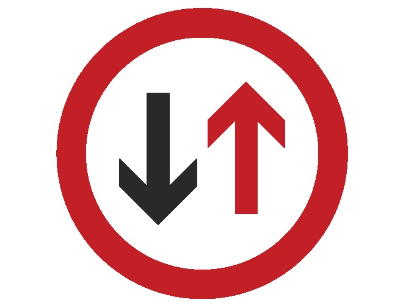
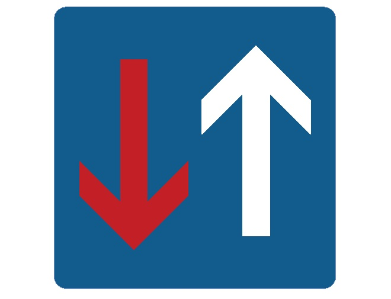
Question 45 (ID: 1564) 1 image(s)
🔗 Voir en détailQ: Avez-vous le droit de stationner sur le trottoir en présence de ce signal?

Question 46 (ID: 1345)
🔗 Voir en détailQ: Y a-t-il une distance de sécurité minimale obligatoire sur autoroute?
Question 47 (ID: 977) 1 image(s)
🔗 Voir en détailQ: Avez-vous le droit de vous arrêter à cet endroit?

Question 48 (ID: 1274)
🔗 Voir en détailQ: Quand avez-vous le droit de monter des chaînes à neige?
Question 49 (ID: 706) 1 image(s)
🔗 Voir en détailQ: Avez-vous le droit de dépasser un tracteur?
Question 50 (ID: 736) 1 image(s)
🔗 Voir en détailQ: Avez-vous le droit d'accéder à cette rue si la longueur de votre voiture dépasse 7 m?

Question 51 (ID: 1252) 1 image(s)
🔗 Voir en détailQ: Ce signal signifie:

Question 52 (ID: 729) 1 image(s)
🔗 Voir en détailQ: Que signifie ce signal?

Question 53 (ID: 209) 1 image(s)
🔗 Voir en détailQ: Dans cette situation, vous vous tenez prêt à freiner car la voiture pourrait sortir devant vous.

Question 54 (ID: 1571)
🔗 Voir en détailQ: Avez-vous le droit de vous arrêter à un endroit marqué d'une ligne jaune continue sur la bordure d'un trottoir pour laisser descendre un passager?
Question 55 (ID: 268) 1 image(s)
🔗 Voir en détailQ: Qui a le droit d'accéder à cette rue?
Question 56 (ID: 715) 1 image(s)
🔗 Voir en détailQ: Est-ce que vous avez le droit de rouler à 70 km/h sur la voie de gauche?
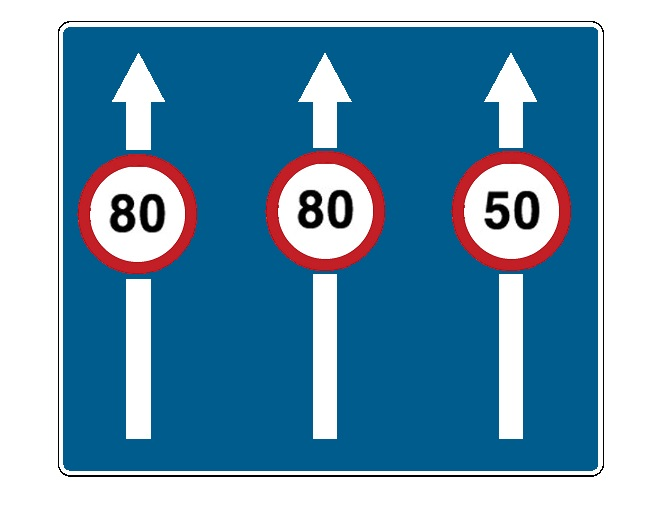
Question 57 (ID: 1003) 3 image(s)
🔗 Voir en détailQ: Lequel de ces signaux signifie « Interdiction de tourner à droite »?

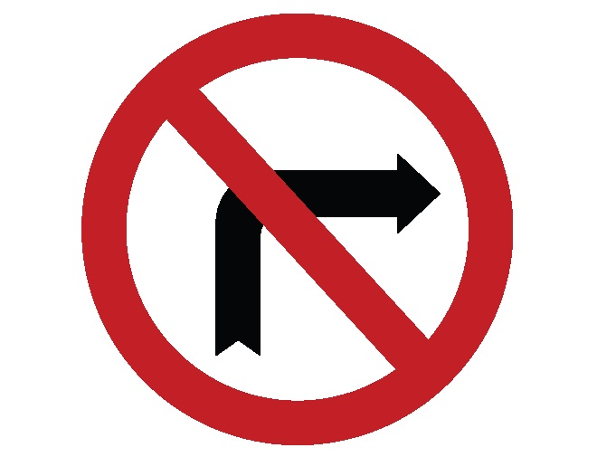
Question 58 (ID: 1181) 3 image(s)
🔗 Voir en détailQ: Lequel de ces signaux vous interdit de rouler à moins de 70 km/h en conditions normales?
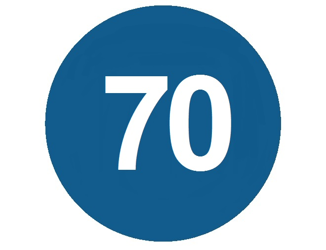


Question 59 (ID: 728) 1 image(s)
🔗 Voir en détailQ: Avez-vous le droit d'accéder à cette rue avec une remorque à plusieurs essieux?

Question 60 (ID: 906) 1 image(s)
🔗 Voir en détailQ: Ce signal vous indique la fin de la route prioritaire:
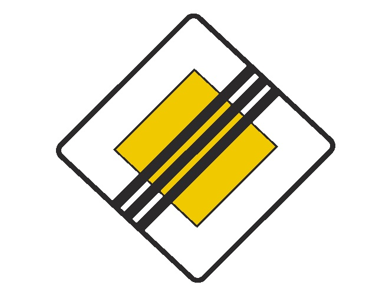
Question 61 (ID: 877) 1 image(s)
🔗 Voir en détailQ: A l'approche de ce signal, vous vous tenez prêt à freiner:

Question 62 (ID: 1201) 1 image(s)
🔗 Voir en détailQ: Avez-vous le droit de stationner dans une rue cyclable?
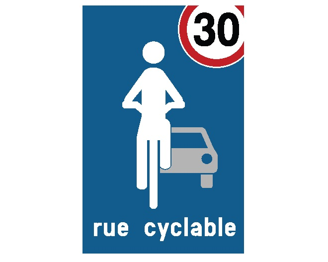
Question 63 (ID: 42) 1 image(s)
🔗 Voir en détailQ: Quelle attitude devez-vous adopter à partir de ce signal?
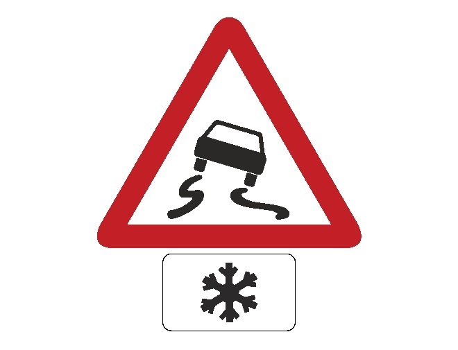
Question 64 (ID: 893) 1 image(s)
🔗 Voir en détailQ: Est-ce que ce signal vous oblige à céder la priorité à la circulation venant de droite?

Question 65 (ID: 1005) 3 image(s)
🔗 Voir en détailQ: Lequel de ces signaux vous interdit de rouler à plus de 70 km/h?
Question 66 (ID: 170) 1 image(s)
🔗 Voir en détailQ: À partir de ce signal vous vous attendez à:

Question 67 (ID: 979) 1 image(s)
🔗 Voir en détailQ: Avez-vous le droit de vous arrêter à cet endroit pour laisser sortir un passager?
Question 68 (ID: 16)
🔗 Voir en détailQ: Le dérapage d'un véhicule peut être provoqué par:
Question 69 (ID: 1599) 1 image(s)
🔗 Voir en détailQ: Que signifie ce signal?
Question 70 (ID: 210)
🔗 Voir en détailQ: Lors d'un freinage à fond, le système ABS permet de raccourcir la distance de réaction:
Question 71 (ID: 1519)
🔗 Voir en détailQ: Que signifie l'expression « contourner un obstacle »?
Question 72 (ID: 1499)
🔗 Voir en détailQ: Vous avez le droit de stationner:
Question 73 (ID: 951) 1 image(s)
🔗 Voir en détailQ: Ce signal vous indique:

Question 74 (ID: 238) 1 image(s)
🔗 Voir en détailQ: À une intersection ce feu orange clignote. Est-ce que vous devez-vous arrêter?
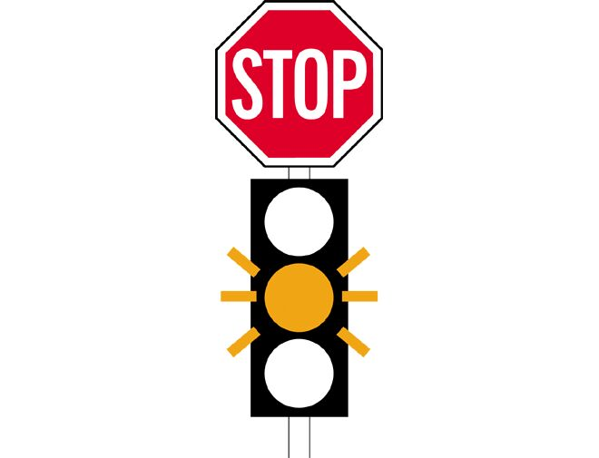
Question 75 (ID: 204)
🔗 Voir en détailQ: Est-ce que le dépassement est autorisé même si le rabattement à droite n'est pas garanti?
Question 76 (ID: 88)
🔗 Voir en détailQ: L'arrêt est interdit:
Question 77 (ID: 200)
🔗 Voir en détailQ: Faut-il augmenter la distance de sécurité en cas de pluie?
Question 78 (ID: 1476) 1 image(s)
🔗 Voir en détailQ: Ce signal indique:

Question 79 (ID: 912) 1 image(s)
🔗 Voir en détailQ: En sortant de cette zone, vous devez céder la priorité:
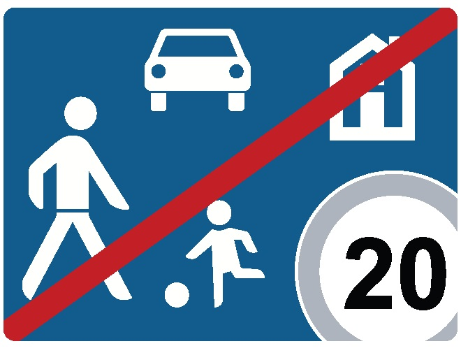
Question 80 (ID: 1456) 1 image(s)
🔗 Voir en détailQ: Ce signal vous annonce un passage à niveau:
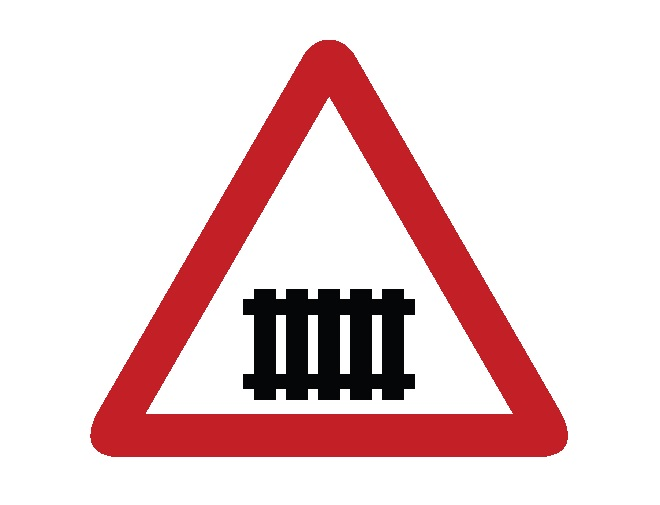
Question 81 (ID: 1500)
🔗 Voir en détailQ: Quelle est la distance minimale obligatoire à respecter de part et d'autre du passage pour piétons pour décharger des marchandises?
Question 82 (ID: 712) 1 image(s)
🔗 Voir en détailQ: A partir de ce signal vous avez le droit de dépasser:
Question 83 (ID: 232) 1 image(s)
🔗 Voir en détailQ: Quel est votre comportement en présence de ce signal?

Question 84 (ID: 115)
🔗 Voir en détailQ: Combien de personnes pouvez-vous transporter sur un tracteur?
Question 85 (ID: 1106)
🔗 Voir en détailQ: Est-ce que le poids du chargement d'un véhicule influence la consommation de carburant?
Question 86 (ID: 1286) 1 image(s)
🔗 Voir en détailQ: Que signifie ce signal?
Question 87 (ID: 235) 1 image(s)
🔗 Voir en détailQ: À partir de ce signal:
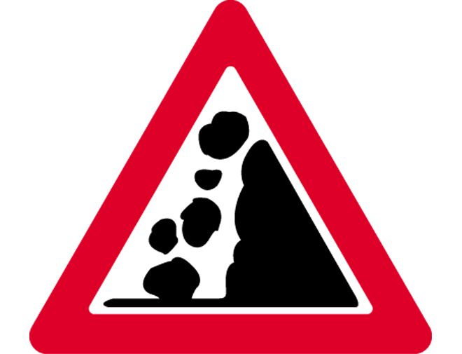
Question 88 (ID: 971) 1 image(s)
🔗 Voir en détailQ: Ce signal indique:

Question 89 (ID: 1435) 1 image(s)
🔗 Voir en détailQ: Ce signal vous annonce:
Question 90 (ID: 17)
🔗 Voir en détailQ: La limitation de vitesse pour voitures équipées de pneus à crampons (spikes) est de:
Question 91 (ID: 1439) 1 image(s)
🔗 Voir en détailQ: Ce signal vous annonce:
Question 92 (ID: 1485) 3 image(s)
🔗 Voir en détailQ: Lequel de ces signaux signifie « Piste cyclable obligatoire »?

Question 93 (ID: 1053)
🔗 Voir en détailQ: Est-ce que des pneus « toutes saisons » portant l'inscription M+S sur le flanc sont autorisés lors de conditions hivernales?
Question 94 (ID: 1585)
🔗 Voir en détailQ: Quel document de bord le conducteur d'un cyclomoteur doit-il pouvoir présenter lors d'un contrôle de police?
Question 95 (ID: 1347)
🔗 Voir en détailQ: En cas de panne sur autoroute, le port de la veste de sécurité:
Question 96 (ID: 545)
🔗 Voir en détailQ: Le permis B vous autorise-t-il à conduire un taxi?
Question 97 (ID: 1287) 3 image(s)
🔗 Voir en détailQ: Ces signaux sont des:

Question 98 (ID: 1260) 1 image(s)
🔗 Voir en détailQ: Est-ce que vous avez le droit de stationner à cet endroit pour la durée d'une heure?
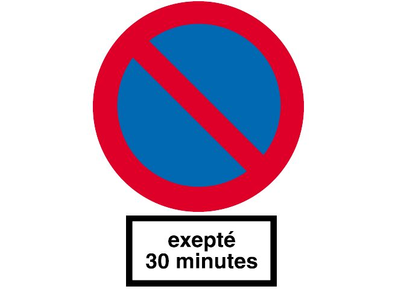
Question 99 (ID: 1473) 1 image(s)
🔗 Voir en détailQ: A partir de ce signal, il vous est interdit:

Question 100 (ID: 184) 1 image(s)
🔗 Voir en détailQ: Je circule en premier:

Question 101 (ID: 196) 1 image(s)
🔗 Voir en détailQ: Quel est l'ordre de passage?

Question 102 (ID: 150)
🔗 Voir en détailQ: Est-ce que vous avez le droit de faire tourner le moteur sans nécessité technique?
Question 103 (ID: 967) 1 image(s)
🔗 Voir en détailQ: L'accès à cette route est interdit aux:

Question 104 (ID: 169) 1 image(s)
🔗 Voir en détailQ: Que signifie ce signal?
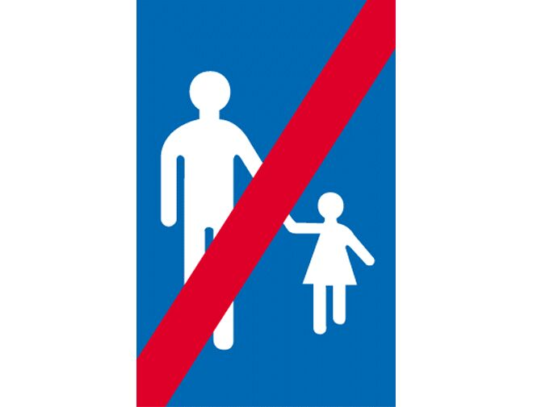
Question 105 (ID: 1438) 1 image(s)
🔗 Voir en détailQ: Ce signal vous annonce:
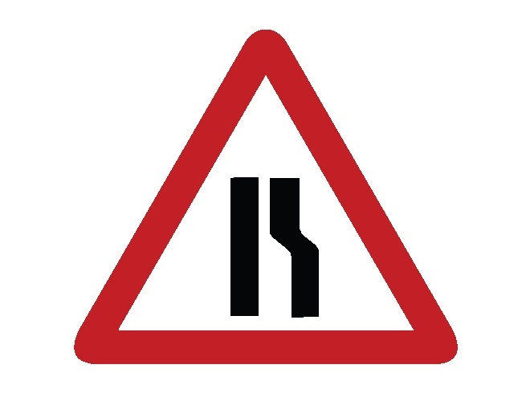
Question 106 (ID: 28)
🔗 Voir en détailQ: Devez-vous avoir à bord de votre véhicule un triangle de détresse?
Question 107 (ID: 928) 1 image(s)
🔗 Voir en détailQ: Ce signal est:
Question 108 (ID: 1104)
🔗 Voir en détailQ: Pour économiser du carburant vous devez:
Question 109 (ID: 1464) 1 image(s)
🔗 Voir en détailQ: A qui devez-vous céder le passage en présence de ce signal?
Question 110 (ID: 737) 1 image(s)
🔗 Voir en détailQ: Avez-vous le droit d'accéder à cette rue si la longueur totale de votre voiture avec remorque dépasse 7 m?
Question 111 (ID: 954) 1 image(s)
🔗 Voir en détailQ: Avez-vous le droit d'accéder à cette rue si vous n'êtes pas riverain?
Question 112 (ID: 1054)
🔗 Voir en détailQ: Quelle peut être une conséquence du sous-gonflage des pneus?
Question 113 (ID: 251) 1 image(s)
🔗 Voir en détailQ: Que signifie ce signal?
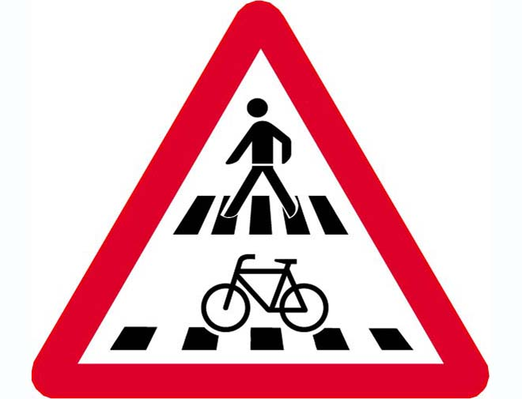
Question 114 (ID: 844) 1 image(s)
🔗 Voir en détailQ: Ce signal vous indique:
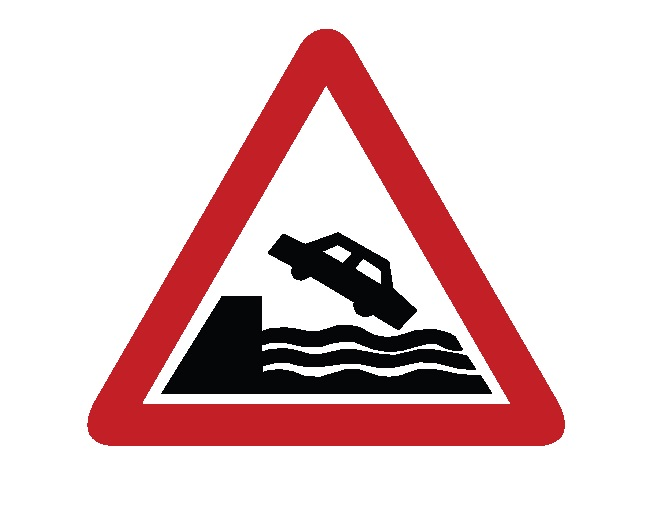
Question 115 (ID: 1568) 3 image(s)
🔗 Voir en détailQ: Lequel de ces signaux vous autorise à stationner sur le trottoir?
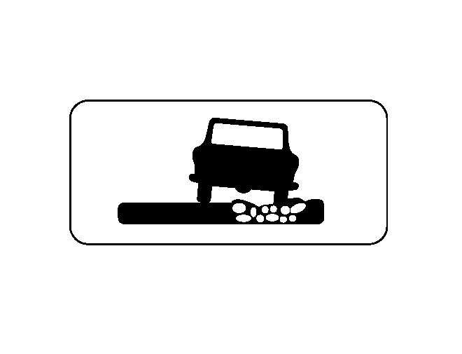

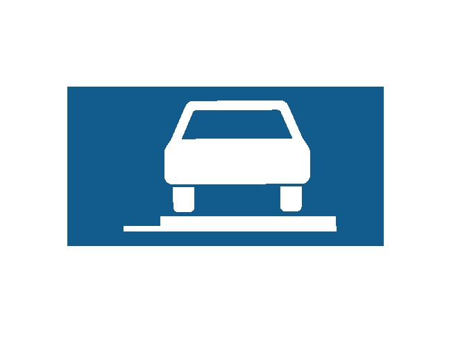
Question 116 (ID: 252) 1 image(s)
🔗 Voir en détailQ: Que signifie ce signal?

Question 117 (ID: 223) 1 image(s)
🔗 Voir en détailQ: Ce signal vous autorise à vous arrêter:

Question 118 (ID: 337) 1 image(s)
🔗 Voir en détailQ: À partir de ce signal (dans des conditions de circulation normale):

Question 119 (ID: 1448) 1 image(s)
🔗 Voir en détailQ: Ce signal vous annonce:
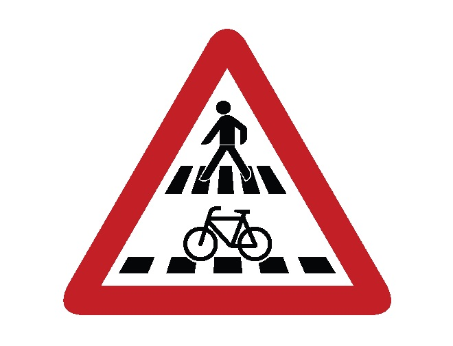
Question 120 (ID: 1443) 1 image(s)
🔗 Voir en détailQ: Ce signal vous indique:
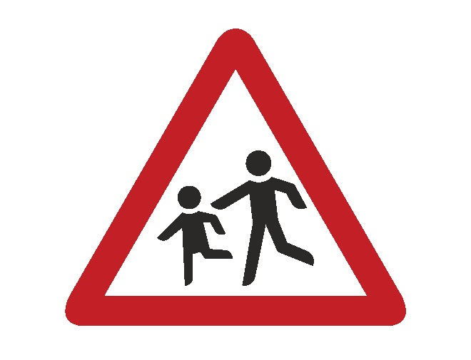
Question 121 (ID: 883) 1 image(s)
🔗 Voir en détailQ: Est-ce qu'un véhicule peut déboucher de cette rue?
Question 122 (ID: 991) 1 image(s)
🔗 Voir en détailQ: Le dépassement est:
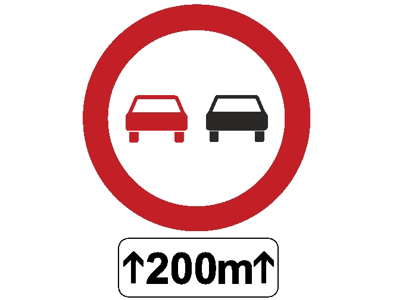
Question 123 (ID: 1107)
🔗 Voir en détailQ: Est-ce que le sous-gonflage des pneus fait augmenter la consommation de carburant?
Question 124 (ID: 1483) 1 image(s)
🔗 Voir en détailQ: En présence de ces signaux, le temps de parcage est limité par:
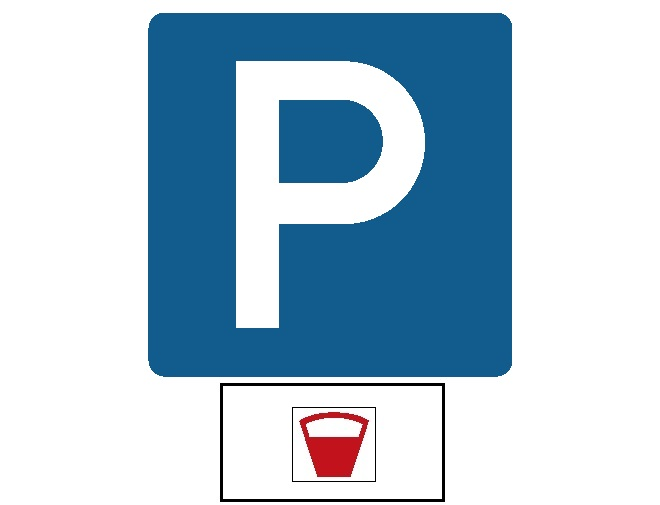
Question 125 (ID: 560)
🔗 Voir en détailQ: Si vous tractez une remorque, quelle est la limitation de vitesse sur autoroute en cas de pluie ou d'autres précipitations?
Question 126 (ID: 1056)
🔗 Voir en détailQ: A quels intervalles devriez-vous contrôler la pression des pneus?
Question 127 (ID: 1007) 2 image(s)
🔗 Voir en détailQ: Lequel de ces signaux vous indique qu'il n'y a pas de circulation en sens opposé?

Question 128 (ID: 905) 1 image(s)
🔗 Voir en détailQ: Ce signal vous indique que vous devez céder la priorité à la prochaine intersection:
Question 129 (ID: 910) 1 image(s)
🔗 Voir en détailQ: Ce signal vous indique un passage à niveau:
Question 130 (ID: 1025) 1 image(s)
🔗 Voir en détailQ: Avez-vous le droit de vous immobiliser sur un tel passage?

Question 131 (ID: 1124)
🔗 Voir en détailQ: Avez-vous le droit de faire demi-tour sur autoroute?
Question 132 (ID: 1363)
🔗 Voir en détailQ: Quel est le taux d'alcoolémie légal pour les chauffeurs professionnels?
Question 133 (ID: 117)
🔗 Voir en détailQ: À partir de quel âge avez-vous le droit de conduire un tracteur à grande vitesse (TGV)?
Question 134 (ID: 889) 1 image(s)
🔗 Voir en détailQ: Ce signal indique:

Question 135 (ID: 1045)
🔗 Voir en détailQ: Devez-vous allumer le clignotant pour sortir d'un giratoire?
Question 136 (ID: 937) 1 image(s)
🔗 Voir en détailQ: Avez-vous le droit de traverser la voie de droite pour accéder à une propriété privée?
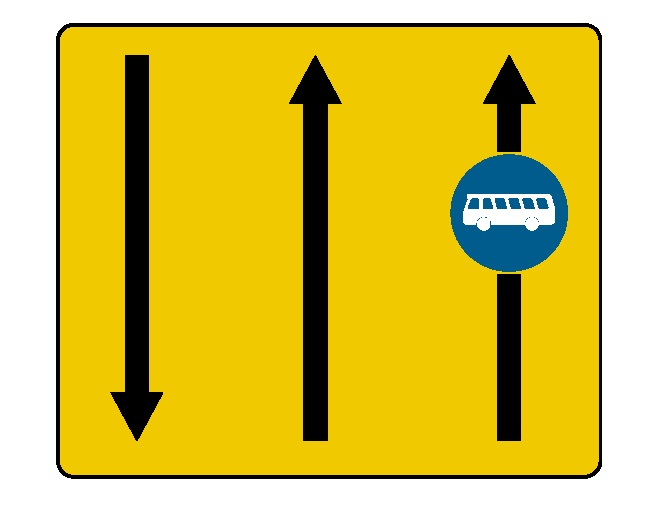
Question 137 (ID: 1445) 1 image(s)
🔗 Voir en détailQ: Ce signal vous annonce:
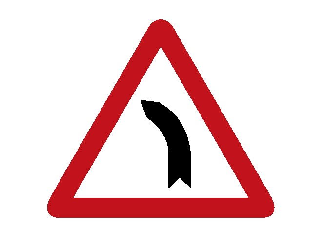
Question 138 (ID: 925) 4 image(s)
🔗 Voir en détailQ: Ce signal met fin au:
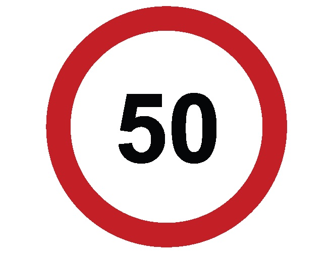
Question 139 (ID: 1074)
🔗 Voir en détailQ: Quelle est la distance à respecter si vous dépassez un cycliste?
Question 140 (ID: 241) 1 image(s)
🔗 Voir en détailQ: En présence de ce signal:

Question 141 (ID: 103)
🔗 Voir en détailQ: Y a-t-il une profondeur minimale prescrite pour les pneus d'un cyclomoteur?
Question 142 (ID: 735) 1 image(s)
🔗 Voir en détailQ: Avez-vous le droit d'accéder à cette rue si la masse en charge de votre voiture dépasse 2 t?
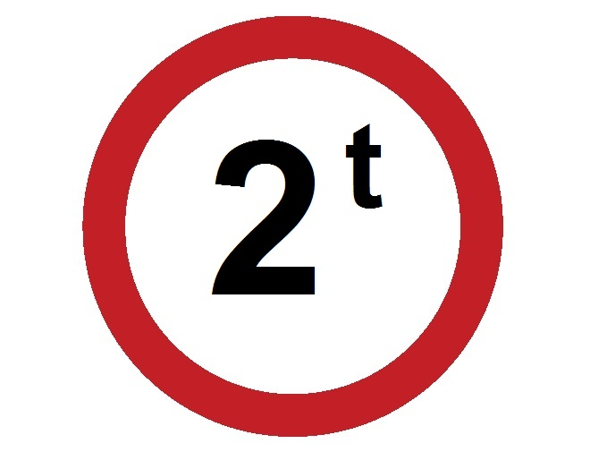
Question 143 (ID: 1462) 1 image(s)
🔗 Voir en détailQ: A qui devez-vous céder le passage en présence de ce signal?
Question 144 (ID: 1279) 1 image(s)
🔗 Voir en détailQ: Quelle attitude adoptez-vous en hiver à partir de ce signal?
Question 145 (ID: 340) 1 image(s)
🔗 Voir en détailQ: Que signifie ce signal?

Question 146 (ID: 707) 1 image(s)
🔗 Voir en détailQ: Avez-vous le droit de dépasser un motocycle sans<br>side-car?
Question 147 (ID: 869) 1 image(s)
🔗 Voir en détailQ: A partir de ce signal vous vous attendez à un ralentissement de la circulation:

Question 148 (ID: 881) 2 image(s)
🔗 Voir en détailQ: Quel signal autorise l'accès aux riverains?

Question 149 (ID: 1602) 2 image(s)
🔗 Voir en détailQ: Lequel de ces signaux vous annonce une voie lente?
Question 150 (ID: 908) 1 image(s)
🔗 Voir en détailQ: Ce signal vous indique un passage à niveau:

Question 151 (ID: 1594) 1 image(s)
🔗 Voir en détailQ: Ce signal vous indique:
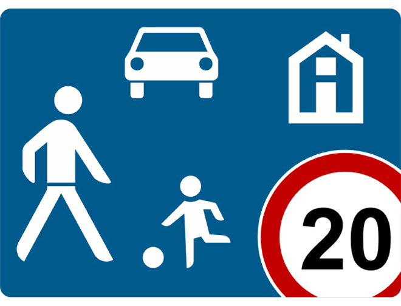
Question 152 (ID: 1272)
🔗 Voir en détailQ: Un dérapage peut être provoqué:
Question 153 (ID: 1069)
🔗 Voir en détailQ: Devez-vous respecter la limitation de vitesse lorsque vous dépassez un véhicule?
Question 154 (ID: 901) 1 image(s)
🔗 Voir en détailQ: Ce signal vous indique que vous devez céder le passage à la circulation venant de gauche et de droite:

Question 155 (ID: 1407)
🔗 Voir en détailQ: Devez-vous allumer le clignotant gauche pour dépasser un cyclomoteur?
Question 156 (ID: 1452) 1 image(s)
🔗 Voir en détailQ: Ce signal vous annonce:
Question 157 (ID: 1254) 1 image(s)
🔗 Voir en détailQ: Ce signal signifie:

Question 158 (ID: 1050)
🔗 Voir en détailQ: Le sous-gonflage d'un pneu peut entraîner:
Question 159 (ID: 101)
🔗 Voir en détailQ: Avant un virage en descente, vous réduisez la vitesse de façon à ne plus devoir freiner fortement dans le virage:
Question 160 (ID: 1080)
🔗 Voir en détailQ: Après le passage d'un train vous avez le droit de franchir le passage à niveau:
Question 161 (ID: 181) 1 image(s)
🔗 Voir en détailQ: Avez-vous le droit de dépasser un tracteur?
Question 162 (ID: 980) 1 image(s)
🔗 Voir en détailQ: Avez-vous le droit de vous arrêter à cet endroit pour charger des marchandises?
Question 163 (ID: 891) 2 image(s)
🔗 Voir en détailQ: Lequel de ces signaux vous oblige à céder la priorité à la circulation venant de droite?
Question 164 (ID: 569)
🔗 Voir en détailQ: Combien de remorques avez-vous le droit de tracter avec votre véhicule?
Question 165 (ID: 559)
🔗 Voir en détailQ: Quelle est la limitation de vitesse sur autoroute si vous tractez une remorque?
Question 166 (ID: 866) 1 image(s)
🔗 Voir en détailQ: A partir de ce signal vous risquez d'être dévié de votre trajectoire:
Question 167 (ID: 1092)
🔗 Voir en détailQ: Avez-vous le droit de vous arrêter en 2<sup>e</sup> file?
Question 168 (ID: 1127)
🔗 Voir en détailQ: Si votre véhicule est équipé du système ABS, vous n'avez pas besoin de respecter la distance de sécurité de 2 secondes par rapport au véhicule qui vous précède:
Question 169 (ID: 914) 1 image(s)
🔗 Voir en détailQ: A qui devez-vous céder le passage lorsque vous sortez d'un parking?
Question 170 (ID: 886) 1 image(s)
🔗 Voir en détailQ: Ce signal indique:

Question 171 (ID: 1037)
🔗 Voir en détailQ: Quand vous dépassez un deux-roues, vous devez vous attendre à ce qu'il dévie de sa trajectoire pour éviter un obstacle:
Question 172 (ID: 1353)
🔗 Voir en détailQ: Quel est le taux d'alcoolémie légal pour les conducteurs en période de stage?
Question 173 (ID: 992) 1 image(s)
🔗 Voir en détailQ: Le dépassement est:
Question 174 (ID: 89) 1 image(s)
🔗 Voir en détailQ: Quel comportement adoptez-vous?

Question 175 (ID: 1559) 1 image(s)
🔗 Voir en détailQ: À partir de ce signal:
Question 176 (ID: 26)
🔗 Voir en détailQ: À quoi devez-vous faire attention si vous voulez contourner un autobus qui s'est arrêté à un arrêt d'autobus?
Question 177 (ID: 927) 1 image(s)
🔗 Voir en détailQ: Ce signal est:

Question 178 (ID: 1494)
🔗 Voir en détailQ: Devez-vous céder la priorité à la circulation venant en sens opposé avant de contourner un obstacle?
Question 179 (ID: 1359)
🔗 Voir en détailQ: Est-ce que le chargement peut dépasser la largeur de votre véhicule?
Question 180 (ID: 18)
🔗 Voir en détailQ: La consommation de carburant peut être réduite:
Question 181 (ID: 950) 1 image(s)
🔗 Voir en détailQ: Ce signal vous indique:
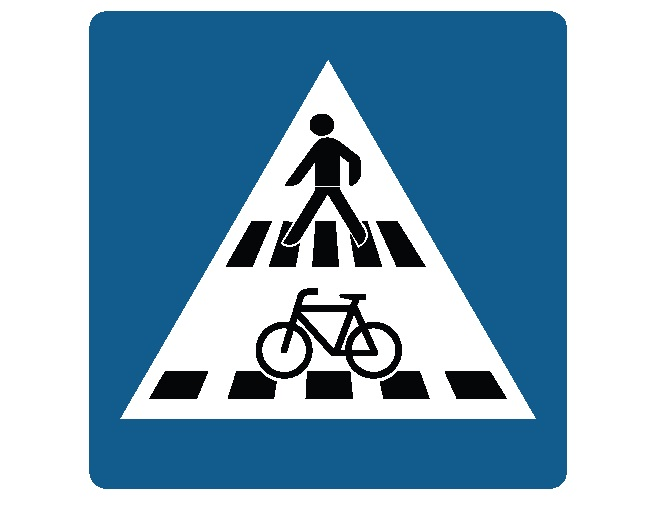
Question 182 (ID: 725) 1 image(s)
🔗 Voir en détailQ: Avez-vous le droit d'accéder à cette rue si vous tractez une remorque?

Question 183 (ID: 1518) 1 image(s)
🔗 Voir en détailQ: Que vous indique ce témoin lumineux sur votre tableau de bord?

Question 184 (ID: 1193)
🔗 Voir en détailQ: Lorsque vous circulez à une vitesse nettement inférieure à celle des autres usagers:
Question 185 (ID: 730) 1 image(s)
🔗 Voir en détailQ: Que signifie ce signal?

Question 186 (ID: 852) 1 image(s)
🔗 Voir en détailQ: Ce signal vous indique:

Question 187 (ID: 1049)
🔗 Voir en détailQ: Est-ce que la pression des pneus doit être adaptée à la charge du véhicule?
Question 188 (ID: 904) 1 image(s)
🔗 Voir en détailQ: Ce signal vous indique que vous devez céder la priorité à droite à la prochaine intersection:
Question 189 (ID: 13)
🔗 Voir en détailQ: En transportant des bagages sur le toit de votre voiture:
Question 190 (ID: 362) 1 image(s)
🔗 Voir en détailQ: Un conducteur de cyclomoteur a-t-il le droit d’accéder à cette rue:
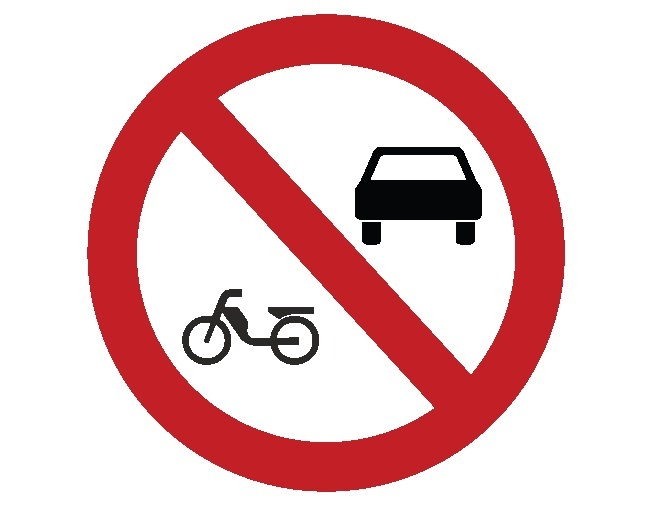
Question 191 (ID: 890) 1 image(s)
🔗 Voir en détailQ: Il s'agit ici d'une:

Question 192 (ID: 1401) 1 image(s)
🔗 Voir en détailQ: Ce signal vous indique:
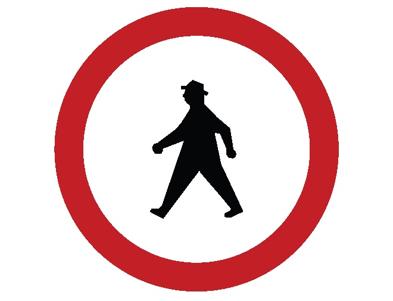
Question 193 (ID: 31) 1 image(s)
🔗 Voir en détailQ: Avez-vous le droit de traverser cette voie pour accéder à une propriété riveraine?

Question 194 (ID: 116)
🔗 Voir en détailQ: Avez-vous le droit de transporter des personnes sur une remorque (immatriculée)?
Question 195 (ID: 1584)
🔗 Voir en détailQ: Quel est le risque en cas de pluie?
Question 196 (ID: 99)
🔗 Voir en détailQ: Avez-vous le droit de transporter des objets sur le cyclomoteur?
Question 197 (ID: 346)
🔗 Voir en détailQ: Pour économiser du carburant et pour réduire l'émission de gaz nocifs:
Question 198 (ID: 1366) 1 image(s)
🔗 Voir en détailQ: Le stationnement dans cette zone est:
Question 199 (ID: 996) 1 image(s)
🔗 Voir en détailQ: Dans cette rue, devez-vous vous attendre à de la circulation venant en sens opposé?
Question 200 (ID: 1304) 1 image(s)
🔗 Voir en détailQ: A partir de ce signal:

Question 201 (ID: 194) 1 image(s)
🔗 Voir en détailQ: Je laisse passer la cycliste (B):

Question 202 (ID: 1071)
🔗 Voir en détailQ: Lorsqu'un autre véhicule vous dépasse:
Question 203 (ID: 1486)
🔗 Voir en détailQ: Dans quel cas avez-vous le droit de franchir une ligne continue (de sécurité)?
Question 204 (ID: 932) 1 image(s)
🔗 Voir en détailQ: Ce signal signifie:

Question 205 (ID: 30) 1 image(s)
🔗 Voir en détailQ: Avez-vous le droit de circuler sur cette voie?
Question 206 (ID: 1480) 1 image(s)
🔗 Voir en détailQ: En présence de ces signaux, le temps de stationnement est limité par:

Question 207 (ID: 1002) 3 image(s)
🔗 Voir en détailQ: Lequel de ces signaux signifie « Virage dangereux à droite »?
Question 208 (ID: 1288) 1 image(s)
🔗 Voir en détailQ: Ce signal indique la fin:
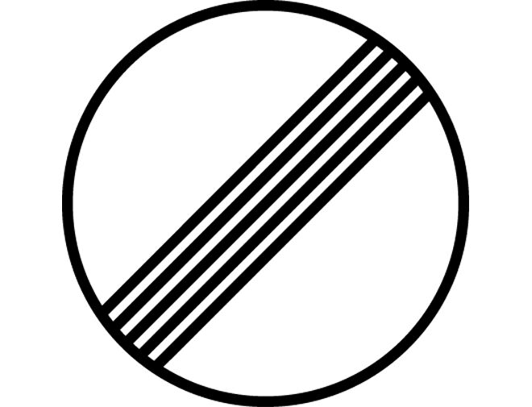
Question 209 (ID: 1066)
🔗 Voir en détailQ: Devez-vous regarder dans les rétroviseurs avant de dépasser un véhicule?
Question 210 (ID: 6)
🔗 Voir en détailQ: Vous conduisez une voiture accouplée d'une remorque. Quelle est la vitesse maximale autorisée en cas de pluie?
Question 211 (ID: 19)
🔗 Voir en détailQ: L'obligation de tenir une distance de sécurité suffisamment grande par rapport au véhicule qui vous précède:
Question 212 (ID: 714) 1 image(s)
🔗 Voir en détailQ: Est-ce que vous avez le droit de rouler à 70 km/h sur la voie de gauche?

Question 213 (ID: 970) 1 image(s)
🔗 Voir en détailQ: Vous avez le droit de stationner:

Question 214 (ID: 162) 1 image(s)
🔗 Voir en détailQ: Ce signal indique que:
Question 215 (ID: 188) 1 image(s)
🔗 Voir en détailQ: Je circule en dernier:
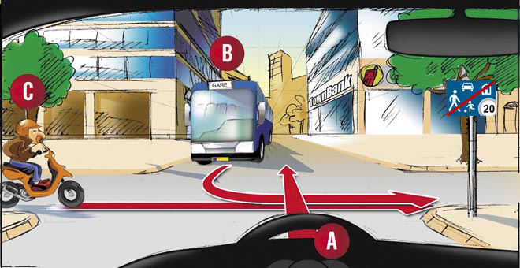
Question 216 (ID: 126) 1 image(s)
🔗 Voir en détailQ: Quel est votre comportement à l'approche de ce signal:
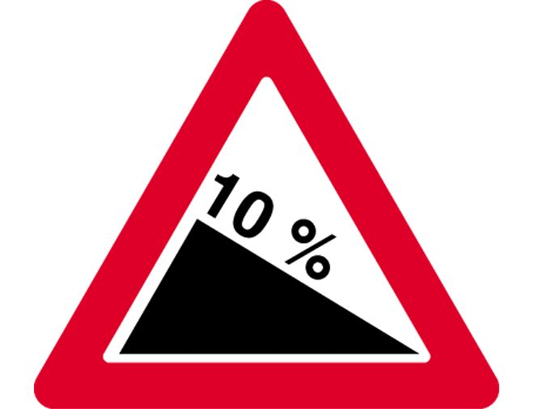
Question 217 (ID: 1273) 1 image(s)
🔗 Voir en détailQ: Dans cette rue:
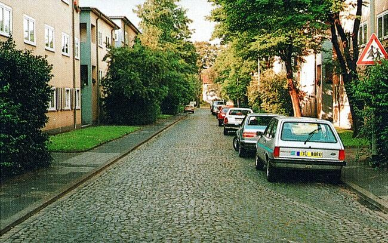
Question 218 (ID: 1205) 1 image(s)
🔗 Voir en détailQ: Avez-vous le droit de dépasser un véhicule en présence d'une ligne continue (de sécurité)?

Question 219 (ID: 563)
🔗 Voir en détailQ: En cas de panne sur autoroute:
Question 220 (ID: 227) 1 image(s)
🔗 Voir en détailQ: À l'approche d'une intersection vous voyez cette signalisation:
Question 221 (ID: 245) 1 image(s)
🔗 Voir en détailQ: Un obstacle est signalé par ce signal:

Question 222 (ID: 708) 1 image(s)
🔗 Voir en détailQ: Avez-vous le droit de dépasser un motocycle avec<br>side-car?
Question 223 (ID: 515) 1 image(s)
🔗 Voir en détailQ: Est-ce que le système ABS fonctionne si ce témoin reste allumé?

Question 224 (ID: 941) 1 image(s)
🔗 Voir en détailQ: Les véhicules lents sont obligés à circuler sur la voie de droite:
Question 225 (ID: 3)
🔗 Voir en détailQ: Est-ce qu'il faut se servir du frein avant et arrière du cyclomoteur en même temps:
Question 226 (ID: 842) 1 image(s)
🔗 Voir en détailQ: Ce signal est:
Question 227 (ID: 1495)
🔗 Voir en détailQ: Quand avez-vous le droit de dépasser par la droite?
Question 228 (ID: 155) 1 image(s)
🔗 Voir en détailQ: Quel est votre comportement dans cette descente?
Question 229 (ID: 999) 3 image(s)
🔗 Voir en détailQ: Lequel de ces signaux signifie « Débouché de cyclistes »?
Question 230 (ID: 1472) 1 image(s)
🔗 Voir en détailQ: A partir de ce signal, vous devez allumer:
Question 231 (ID: 724) 1 image(s)
🔗 Voir en détailQ: Avez-vous le droit d'accéder à cette rue si vous conduisez une camionnette?

Question 232 (ID: 1303) 1 image(s)
🔗 Voir en détailQ: En voyant ce signal:
Question 233 (ID: 1587)
🔗 Voir en détailQ: Y a-t-il une profondeur minimale prescrite du profil pour les pneus d'un véhicule traîné?
Question 234 (ID: 203)
🔗 Voir en détailQ: Vous avez l'intention de faire demi-tour sur la voie publique:
Question 235 (ID: 1516) 1 image(s)
🔗 Voir en détailQ: Ce signal signifie:

Question 236 (ID: 185) 1 image(s)
🔗 Voir en détailQ: Je laisse passer le cyclomoteur (B):
Question 237 (ID: 1517) 1 image(s)
🔗 Voir en détailQ: Que vous indique ce témoin lumineux sur votre tableau de bord?
Question 238 (ID: 213)
🔗 Voir en détailQ: Quel peut être l'effet provoqué par la consommation d'alcool?
Question 239 (ID: 197) 1 image(s)
🔗 Voir en détailQ: Je circule en dernier:
Question 240 (ID: 1477) 1 image(s)
🔗 Voir en détailQ: Avez-vous le droit de vous arrêter à cet endroit pour laisser sortir un passager?
Question 241 (ID: 1465) 1 image(s)
🔗 Voir en détailQ: A qui devez-vous céder le passage en présence de ce signal?
Question 242 (ID: 1055)
🔗 Voir en détailQ: Quelle peut être une conséquence du sur-gonflage des pneus?
Question 243 (ID: 1440) 1 image(s)
🔗 Voir en détailQ: Ce signal vous annonce:
Question 244 (ID: 1603)
🔗 Voir en détailQ: Lorsque vous circulez à une vitesse nettement inférieure à celle des autres usagers:
Question 245 (ID: 1078)
🔗 Voir en détailQ: En cas d'attente prolongée au passage à niveau, vous devez couper le moteur:
Question 246 (ID: 1196)
🔗 Voir en détailQ: Le feu rouge clignotant au passage à niveau signifie:
Question 247 (ID: 1282)
🔗 Voir en détailQ: Qu'entendez-vous par "conduite défensive"?
Question 248 (ID: 172) 1 image(s)
🔗 Voir en détailQ: Dans cette zone:

Question 249 (ID: 1408)
🔗 Voir en détailQ: Comment calculez-vous la charge utile de votre véhicule?
Question 250 (ID: 1197)
🔗 Voir en détailQ: Avez-vous le droit d'immobiliser votre véhicule sur un passage à niveau?
Question 251 (ID: 83) 1 image(s)
🔗 Voir en détailQ: Ce signal indique:

Question 252 (ID: 1270)
🔗 Voir en détailQ: Quel est l'âge minimal pour pouvoir conduire une machine automotrice de 10 t ?
Question 253 (ID: 1192)
🔗 Voir en détailQ: Lorque vous dépassez un autre véhicule:
Question 254 (ID: 936) 1 image(s)
🔗 Voir en détailQ: Avez-vous le droit de circuler sur la voie de droite?
Question 255 (ID: 1129)
🔗 Voir en détailQ: Le système ABS vous permet-il de diriger le véhicule dans la direction souhaitée lorsque vous effectuez un freinage à fond?
Question 256 (ID: 898) 1 image(s)
🔗 Voir en détailQ: A l'approche de ce signal:
Question 257 (ID: 1018) 1 image(s)
🔗 Voir en détailQ: Cette ligne interdit l'arrêt:

Question 258 (ID: 919) 1 image(s)
🔗 Voir en détailQ: A qui devez-vous céder le passage lorsque vous sortez d'une route sans issue?

Question 259 (ID: 1396) 1 image(s)
🔗 Voir en détailQ: Avez-vous le droit de dépasser un cyclomoteur à deux roues?
Question 260 (ID: 948) 3 image(s)
🔗 Voir en détailQ: Lequel de ces signaux vous indique que l'accotement n'est pas carrossable?
Question 261 (ID: 713) 1 image(s)
🔗 Voir en détailQ: Sur l'autoroute, à partir de ce signal, avez-vous le droit de dépasser la vitesse de 90 km/h?
Question 262 (ID: 1284)
🔗 Voir en détailQ: Un groupe d'enfants attend près d'un passage pour piétons qui est réglé par des feux. À quoi devez-vous veiller?
Question 263 (ID: 1597)
🔗 Voir en détailQ: Le dépassement est autorisé:
Question 264 (ID: 1013)
🔗 Voir en détailQ: Avez-vous le droit de franchir une ligne continue (de sécurité) pour dépasser un tracteur?
Question 265 (ID: 1583) 1 image(s)
🔗 Voir en détailQ: À partir de ce signal, des gravillons risquent de compromettre votre adhérence au sol:
Question 266 (ID: 45)
🔗 Voir en détailQ: Il est conseillé de regarder par dessus l'épaule:
Question 267 (ID: 355) 1 image(s)
🔗 Voir en détailQ: À partir de ce signal vous avez le droit:

Question 268 (ID: 12)
🔗 Voir en détailQ: Le permis B vous autorise également à conduire:
Question 269 (ID: 1299) 1 image(s)
🔗 Voir en détailQ: Que signifie ce signal?

Question 270 (ID: 153)
🔗 Voir en détailQ: Une économie de carburant s'obtient:
Question 271 (ID: 1278) 1 image(s)
🔗 Voir en détailQ: Ce signal indique la fin:
Question 272 (ID: 1180) 1 image(s)
🔗 Voir en détailQ: A partir de ce signal par temps sec, vous avez le droit de rouler à:
Question 273 (ID: 161) 1 image(s)
🔗 Voir en détailQ: Ce signal indique que:
Question 274 (ID: 902) 1 image(s)
🔗 Voir en détailQ: En sortant de cette rue, vous devez céder la priorité à la circulation venant de gauche et de droite:
Question 275 (ID: 134)
🔗 Voir en détailQ: Le chargement doit être arrimé de manière à ce qu'il ne puisse se déplacer:
Question 276 (ID: 1458) 1 image(s)
🔗 Voir en détailQ: Ce signal vous annonce:
Question 277 (ID: 1266) 1 image(s)
🔗 Voir en détailQ: À partir de ce signal le stationnement est autorisé pour les cyclomoteurs:
Question 278 (ID: 897) 1 image(s)
🔗 Voir en détailQ: Est-ce que ce signal vous indique que vous devez céder la priorité à la circulation venant de droite et à la circulation venant de gauche?
Question 279 (ID: 64)
🔗 Voir en détailQ: En ce qui concerne les pneus:
Question 280 (ID: 1372)
🔗 Voir en détailQ: Avez-vous le droit de stationner dans une zone résidentielle?
Question 281 (ID: 884) 1 image(s)
🔗 Voir en détailQ: En tant que riverain, avez-vous le droit d'accéder à cette rue?
Question 282 (ID: 106) 1 image(s)
🔗 Voir en détailQ: Un conducteur de cyclomoteur a-t-il le droit d'accéder à cette route:

Question 283 (ID: 1459) 1 image(s)
🔗 Voir en détailQ: Ce signal est:
Question 284 (ID: 1466) 1 image(s)
🔗 Voir en détailQ: Ce signal signifie:

Question 285 (ID: 998) 1 image(s)
🔗 Voir en détailQ: Est-ce que le stationnement est autorisé à partir de ces signaux?
Question 286 (ID: 326)
🔗 Voir en détailQ: Vous suivez un train routier qui s'apprête à virer à droite pour accéder à une rue étroite. À quoi devez-vous vous attendre?
Question 287 (ID: 995) 1 image(s)
🔗 Voir en détailQ: Ces signaux vous indiquent que des cyclistes peuvent circuler dans les deux sens:
Question 288 (ID: 727) 1 image(s)
🔗 Voir en détailQ: Avez-vous le droit d'accéder à cette rue avec une remorque à un seul essieu?
Question 289 (ID: 264) 1 image(s)
🔗 Voir en détailQ: À cet endroit vous voulez tourner à droite:

Question 290 (ID: 35) 1 image(s)
🔗 Voir en détailQ: Un conducteur de cyclomoteur a-t-il le droit d'accéder à cette rue:

Question 291 (ID: 917) 1 image(s)
🔗 Voir en détailQ: A qui devez-vous céder le passage lorsque vous sortez d'une zone de rencontre?
Question 292 (ID: 1572)
🔗 Voir en détailQ: Avez-vous le droit de stationner à un endroit marqué d'une ligne jaune continue sur la bordure d'un trottoir?
Question 293 (ID: 720) 1 image(s)
🔗 Voir en détailQ: Est-ce que tout signal complété par ce panneau additionnel vous concerne?

Question 294 (ID: 1004) 3 image(s)
🔗 Voir en détailQ: Lequel de ces signaux signifie « Direction obligatoire à droite »?
Question 295 (ID: 721) 1 image(s)
🔗 Voir en détailQ: Avez-vous le droit d'accéder à cette rue?
Question 296 (ID: 133)
🔗 Voir en détailQ: Le chargement:
Question 297 (ID: 1398) 1 image(s)
🔗 Voir en détailQ: A partir de ce signal vous avez le droit de dépasser:
Question 298 (ID: 9) 1 image(s)
🔗 Voir en détailQ: Quel comportement adoptez-vous dans cette situation?

Question 299 (ID: 1263)
🔗 Voir en détailQ: Quelle règle devez-vous observer lors du chargement de votre véhicule?
Question 300 (ID: 1186)
🔗 Voir en détailQ: Si vous dépassez un cycliste, devez-vous respecter une distance latérale de 1,5 m au minimum?
Question 301 (ID: 1490)
🔗 Voir en détailQ: Si vous entrez dans une localité bien éclairée, devez-vous passer des feux de route aux feux de croisement?
Question 302 (ID: 1152) 1 image(s)
🔗 Voir en détailQ: Quelle est la limitation de vitesse pour une voiture avec remorque en présence de ce signal (hors autoroute)?
Question 303 (ID: 11)
🔗 Voir en détailQ: Le permis B vous autorise également à conduire:
Question 304 (ID: 1357)
🔗 Voir en détailQ: Le permis B vous autorise-t-il à conduire une machine automotrice d'une m.m.a. ≤ 12.000 kg?
Question 305 (ID: 1356)
🔗 Voir en détailQ: Le permis B vous autorise à conduire:
Question 306 (ID: 1493)
🔗 Voir en détailQ: Devez-vous regarder dans les rétroviseurs avant de contourner un obstacle?
Question 307 (ID: 926) 4 image(s)
🔗 Voir en détailQ: Ce signal met fin au:
Question 308 (ID: 219) 1 image(s)
🔗 Voir en détailQ: Vous voulez contourner la camionnette. Quel est votre comportement?

Question 309 (ID: 14) 1 image(s)
🔗 Voir en détailQ: En quittant l'autoroute y a-t-il risque de sous-estimer sa vitesse?

Question 310 (ID: 1032)
🔗 Voir en détailQ: Devez-vous allumer le clignotant gauche pour dépasser un cycliste?
Question 311 (ID: 1016) 1 image(s)
🔗 Voir en détailQ: Avez-vous le droit de dépasser un véhicule en présence de ces lignes?
Question 312 (ID: 225) 3 image(s)
🔗 Voir en détailQ: Auprès de quel signal devez-vous céder la priorité?


Question 313 (ID: 1290) 1 image(s)
🔗 Voir en détailQ: Que signifie ce signal?
Question 314 (ID: 1258)
🔗 Voir en détailQ: Est-ce que l'obligation de porter la ceinture de sécurité est également applicable aux conducteurs qui exécutent une marche arrière?
Question 315 (ID: 903) 1 image(s)
🔗 Voir en détailQ: Ce signal vous indique que vous circulez sur une route prioritaire:
Question 316 (ID: 221)
🔗 Voir en détailQ: Pendant la nuit, vous devez passer des feux de route aux feux de croisement:
Question 317 (ID: 1358)
🔗 Voir en détailQ: Le port de la ceinture est-il obligatoire sur les places arrière?
Question 318 (ID: 1346)
🔗 Voir en détailQ: Quelle est la distance de sécurité minimale obligatoire sur autoroute?
Question 319 (ID: 1281)
🔗 Voir en détailQ: Une ligne guide (ligne discontinue):
Question 320 (ID: 216)
🔗 Voir en détailQ: Sur quelles routes avez-vous le droit de faire demi-tour?
Question 321 (ID: 27)
🔗 Voir en détailQ: Le conducteur d'un véhicule automoteur doit avoir à bord de son véhicule au moins une veste de sécurité:
Question 322 (ID: 1474) 1 image(s)
🔗 Voir en détailQ: En présence de ce signal, celui qui circule sur la voie de droite doit faciliter le changement de voie au conducteur qui circule sur la voie de gauche:

Question 323 (ID: 1437) 1 image(s)
🔗 Voir en détailQ: Ce signal vous annonce:
Question 324 (ID: 1280) 1 image(s)
🔗 Voir en détailQ: Quelle attitude adoptez-vous en hiver à partir de ce signal?
Question 325 (ID: 123) 1 image(s)
🔗 Voir en détailQ: Ce signal vous concerne-t-il si votre tracteur dépasse la masse indiquée?

Question 326 (ID: 1255)
🔗 Voir en détailQ: A qui devez-vous céder le passage lorsque vous sortez d'une propriété privée?
Question 327 (ID: 1373)
🔗 Voir en détailQ: Avez-vous le droit de stationner dans une zone de rencontre?
Question 328 (ID: 179) 1 image(s)
🔗 Voir en détailQ: Que signifie ce signal?
Question 329 (ID: 36) 1 image(s)
🔗 Voir en détailQ: Vous conduisez une voiture. Avez-vous le droit de dépasser un camion à cet endroit?
Question 330 (ID: 1017) 1 image(s)
🔗 Voir en détailQ: Cette ligne interdit le stationnement:
Question 331 (ID: 104) 1 image(s)
🔗 Voir en détailQ: Ce signal interdit l'accès aux:
Question 332 (ID: 25)
🔗 Voir en détailQ: À quoi devez-vous faire attention si vous voulez contourner un autobus qui s'est arrêté à un arrêt d'autobus?
Question 333 (ID: 1467) 1 image(s)
🔗 Voir en détailQ: Ce signal signifie:
Question 334 (ID: 1505)
🔗 Voir en détailQ: En dehors des localités, le stationnement est autorisé:
Question 335 (ID: 1501)
🔗 Voir en détailQ: Quelle est la distance minimale obligatoire à respecter pour stationner de part et d'autre du passage pour piétons?
Question 336 (ID: 96)
🔗 Voir en détailQ: La vitesse maximale pour cyclomoteurs est limitée à 45 km/h:
Question 337 (ID: 1515)
🔗 Voir en détailQ: Est-ce que le chargement peut dépasser l'arrière de votre véhicule de plus d'un mètre?
Question 338 (ID: 1151) 1 image(s)
🔗 Voir en détailQ: Avez-vous le droit de dépasser une voiture à partir de ce signal?
Question 339 (ID: 124) 1 image(s)
🔗 Voir en détailQ: Votre tracteur a une longueur de 5 m. Vous avez attelé une remorque de 10 m. Avez-vous le droit d'accéder à cette rue?

Question 340 (ID: 552)
🔗 Voir en détailQ: Quelle est la longueur maximale autorisée de votre véhicule, chargement inclus?
Question 341 (ID: 955) 1 image(s)
🔗 Voir en détailQ: Quelle est la limitation de vitesse dans cette rue?
Question 342 (ID: 1293)
🔗 Voir en détailQ: En sortant d'un terrain privé:
Question 343 (ID: 41) 1 image(s)
🔗 Voir en détailQ: Quelle attitude devez-vous adopter à partir de ce signal?
Question 344 (ID: 152)
🔗 Voir en détailQ: Un régime moteur élevé fait augmenter la consommation de carburant:
Question 345 (ID: 1479) 1 image(s)
🔗 Voir en détailQ: En présence de ces signaux, le temps de stationnement est limité par:
Question 346 (ID: 1064)
🔗 Voir en détailQ: Que signifie l'expression « dépasser un véhicule »?
Question 347 (ID: 915) 1 image(s)
🔗 Voir en détailQ: A qui devez-vous céder le passage lorsque vous sortez d'une zone résidentielle?
Question 348 (ID: 40) 1 image(s)
🔗 Voir en détailQ: Ce signal interdit l'accès aux cyclomoteurs:

Question 349 (ID: 1015) 1 image(s)
🔗 Voir en détailQ: Avez-vous le droit de dépasser un véhicule en présence de ces lignes?
Question 350 (ID: 1026) 1 image(s)
🔗 Voir en détailQ: Ce signal vous interdit d'utiliser cette voie:
Question 351 (ID: 231) 1 image(s)
🔗 Voir en détailQ: Que signifie ce signal?
Question 352 (ID: 1047)
🔗 Voir en détailQ: L'usage des feux de détresse est obligatoire:
Question 353 (ID: 1084)
🔗 Voir en détailQ: Entre véhicules circulant dans un giratoire, avez-vous la priorité lorsque vous changez de voie?
Question 354 (ID: 22)
🔗 Voir en détailQ: Le dépassement est autorisé:
Question 355 (ID: 972) 1 image(s)
🔗 Voir en détailQ: Ce signal indique qu'il est:
Question 356 (ID: 1461) 1 image(s)
🔗 Voir en détailQ: En présence de ce signal, avez-vous la priorité par rapport à la circulation venant de droite?
Question 357 (ID: 1449) 1 image(s)
🔗 Voir en détailQ: Ce signal vous annonce:
Question 358 (ID: 122) 1 image(s)
🔗 Voir en détailQ: Que signifie ce signal?

Question 359 (ID: 1446) 1 image(s)
🔗 Voir en détailQ: Ce signal vous annonce:

Question 360 (ID: 1403) 1 image(s)
🔗 Voir en détailQ: Avez-vous le droit de stationner à cet endroit?
Question 361 (ID: 959) 1 image(s)
🔗 Voir en détailQ: Avez-vous le droit d'accéder à cette rue si vous n'êtes pas riverain?
Question 362 (ID: 1295)
🔗 Voir en détailQ: Montez toujours les pneus présentant la plus grande profondeur de profil à l'avant du véhicule:
Question 363 (ID: 1508)
🔗 Voir en détailQ: Est-ce qu'un taux d'alcoolémie de 0,2 ‰ influence l'état physique du conducteur?
Question 364 (ID: 965) 1 image(s)
🔗 Voir en détailQ: L'accès à cette route est interdit aux:

Question 365 (ID: 1507)
🔗 Voir en détailQ: Pour économiser du carburant en descente:
Question 366 (ID: 887) 1 image(s)
🔗 Voir en détailQ: Ce signal indique la fin de l'interdiction de tourner à gauche:
Question 367 (ID: 239) 1 image(s)
🔗 Voir en détailQ: À partir de ce signal:

Question 368 (ID: 1361)
🔗 Voir en détailQ: Avez-vous le droit de monter des pneus hiver (M+S) sur un essieu alors que l'autre est équipé de pneus été?
Question 369 (ID: 43) 1 image(s)
🔗 Voir en détailQ: À partir de ce signal:

Question 370 (ID: 990) 1 image(s)
🔗 Voir en détailQ: Le dépassement est:

Question 371 (ID: 916) 1 image(s)
🔗 Voir en détailQ: A qui devez-vous céder le passage lorsque vous sortez d'une zone piétonne?

Question 372 (ID: 1487)
🔗 Voir en détailQ: En cas de mauvaise visibilité vous devez allumer:
Question 373 (ID: 929) 1 image(s)
🔗 Voir en détailQ: Ce signal est:

Question 374 (ID: 1257)
🔗 Voir en détailQ: A qui devez-vous céder le passage lorsque vous sortez d'un chemin privé?
Question 375 (ID: 154) 1 image(s)
🔗 Voir en détailQ: À qui s'applique ce signal?

Question 376 (ID: 220)
🔗 Voir en détailQ: Vous suivez un camion-remorque qui veut virer à droite dans une rue étroite. À quoi devez-vous vous attendre?
Question 377 (ID: 1492)
🔗 Voir en détailQ: Devez-vous mettre le clignotant avant de contourner un obstacle?
Question 378 (ID: 1093)
🔗 Voir en détailQ: Avez-vous le droit de vous arrêter sur une ligne zigzag pour laisser descendre un passager?
Question 379 (ID: 323)
🔗 Voir en détailQ: Quelle distance de sécurité par rapport au véhicule qui vous précède devez-vous garder en dehors des agglomerations?
Question 380 (ID: 1450) 1 image(s)
🔗 Voir en détailQ: Ce signal vous annonce:
Question 381 (ID: 192) 1 image(s)
🔗 Voir en détailQ: Quel est l'ordre de passage?
Question 382 (ID: 1374)
🔗 Voir en détailQ: Lorsqu'il pleut, vous augmentez la distance de sécurité par rapport au véhicule qui précède:
Question 383 (ID: 934) 1 image(s)
🔗 Voir en détailQ: Avez-vous le droit de circuler sur cette voie?

Question 384 (ID: 332)
🔗 Voir en détailQ: Est-ce que vous avez le droit de vous arrêter sur un arrêt d'autobus?
Question 385 (ID: 960) 1 image(s)
🔗 Voir en détailQ: Quelle est la limitation de vitesse dans cette rue?
Question 386 (ID: 46)
🔗 Voir en détailQ: Il est conseillé de regarder par dessus l'épaule:
Question 387 (ID: 113)
🔗 Voir en détailQ: Pour mieux être vu, le conducteur d'un cyclomoteur:
Question 388 (ID: 10)
🔗 Voir en détailQ: Avant d'ouvrir la portière, vous devez observer le trafic venant de l'arrière:
Question 389 (ID: 1063)
🔗 Voir en détailQ: Comment procédez-vous pour dépasser un véhicule?
Question 390 (ID: 1362)
🔗 Voir en détailQ: Avez-vous le droit d'utiliser des pneus à crampons (spikes) en cas de risque de neige ou de formation de verglas sur un véhicule d'une masse maximale autorisée ≤ 3,5 t?
Question 391 (ID: 330) 1 image(s)
🔗 Voir en détailQ: Ce panneau additionnel s'applique-t-il à votre véhicule?
Question 392 (ID: 1406) 1 image(s)
🔗 Voir en détailQ: Cette ligne jaune vous interdit:

Question 393 (ID: 880) 1 image(s)
🔗 Voir en détailQ: Ce signal vous indique:
Question 394 (ID: 23)
🔗 Voir en détailQ: La consommation de carburant augmente:
Question 395 (ID: 1132)
🔗 Voir en détailQ: Avez-vous le droit de transporter un enfant dans un siège spécial «dos à la route» sur le siège avant?
Question 396 (ID: 33) 1 image(s)
🔗 Voir en détailQ: Vous conduisez une voiture accouplée d'une remorque à deux essieux. Est-ce que l'accès est autorisé?
Question 397 (ID: 944) 1 image(s)
🔗 Voir en détailQ: Pour tourner à gauche dans une rue marquée par ce signal, vous devez vous rapprocher:
Question 398 (ID: 568)
🔗 Voir en détailQ: Quelle est la vitesse maximale autorisée en dehors des agglomérations pour un véhicule équipé de pneus à crampons (spikes)?
Question 399 (ID: 114)
🔗 Voir en détailQ: En empruntant une longue descente:
Question 400 (ID: 1009)
🔗 Voir en détailQ: Pour tourner à gauche dans une rue avec circulation dans les deux sens, vous devez vous rapprocher:
Question 401 (ID: 331)
🔗 Voir en détailQ: Les barrières d'un passage à niveau sont ouvertes, mais les feux rouges clignotants sont allumés. Est-ce que vous devez vous arrêter?
Question 402 (ID: 1360)
🔗 Voir en détailQ: Est-ce que le chargement peut dépasser l'arrière de votre véhicule?
Question 403 (ID: 722) 1 image(s)
🔗 Voir en détailQ: Avez-vous le droit d'accéder à cette rue?
Question 404 (ID: 1457) 1 image(s)
🔗 Voir en détailQ: Ce signal vous annonce un passage à niveau:
Question 405 (ID: 726) 1 image(s)
🔗 Voir en détailQ: Avez-vous le droit d'accéder à cette rue avec une remorque à plusieurs essieux?
Question 406 (ID: 1434) 1 image(s)
🔗 Voir en détailQ: Ce signal est:
Question 407 (ID: 1135)
🔗 Voir en détailQ: Il est conseillé de monter les pneus qui présentent la plus grande profondeur de profil:
Question 408 (ID: 1512)
🔗 Voir en détailQ: Est-ce qu'un enfant de moins de 3 ans doit être transporté dans un siège pour enfants homologué?
Question 409 (ID: 856) 1 image(s)
🔗 Voir en détailQ: Ce signal vous indique:
Question 410 (ID: 1019) 1 image(s)
🔗 Voir en détailQ: Avez-vous le droit de franchir cette ligne?
Question 411 (ID: 119)
🔗 Voir en détailQ: Un 2e feu jaune clignotant est obligatoire:
Question 412 (ID: 1496)
🔗 Voir en détailQ: Est-il obligatoire de respecter la distance de sécurité minimale de 2 secondes en dehors des localités?
Question 413 (ID: 243) 1 image(s)
🔗 Voir en détailQ: À partir de ce signal vous vous attendez:

Question 414 (ID: 935) 1 image(s)
🔗 Voir en détailQ: Ce signal signifie:
Question 415 (ID: 888) 1 image(s)
🔗 Voir en détailQ: Ce signal indique:
Question 416 (ID: 5)
🔗 Voir en détailQ: Vous conduisez une voiture accouplée d'une remorque. Quelle est la vitesse maximale autorisée en cas de pluie?
Question 417 (ID: 1291) 1 image(s)
🔗 Voir en détailQ: Que signifie ce signal?
Question 418 (ID: 1447) 1 image(s)
🔗 Voir en détailQ: Ce signal vous annonce:
Question 419 (ID: 1008) 2 image(s)
🔗 Voir en détailQ: Lequel de ces signaux est un signal d'obligation?
Question 420 (ID: 199) 1 image(s)
🔗 Voir en détailQ: Je circule en dernier:

Question 421 (ID: 1484) 1 image(s)
🔗 Voir en détailQ: Face à ces signaux, vous êtes autorisé à accéder à cette rue:
Question 422 (ID: 1400) 1 image(s)
🔗 Voir en détailQ: Ce signal vous annonce:

Question 423 (ID: 565)
🔗 Voir en détailQ: Avez-vous le droit de monter des pneus été sur l'essieu avant et des pneus hiver (M+S) sur l'essieu arrière d'une camionnette?
Question 424 (ID: 705) 1 image(s)
🔗 Voir en détailQ: Avez-vous le droit de dépasser un camion?
Question 425 (ID: 1292) 1 image(s)
🔗 Voir en détailQ: Ce signal indique une voie fermée à la circulation. Est-ce que cette voie peut être ouverte à la circulation venant en sens inverse?
Question 426 (ID: 1202) 1 image(s)
🔗 Voir en détailQ: Avez-vous le droit de dépasser un cycliste dans une rue cyclable?
Question 427 (ID: 1470) 1 image(s)
🔗 Voir en détailQ: Dans une rue marquée par ce signal, vous avez le droit de:
Question 428 (ID: 1455) 1 image(s)
🔗 Voir en détailQ: Ce signal vous annonce:
Question 429 (ID: 1561) 1 image(s)
🔗 Voir en détailQ: A partir de ce signal, avez-vous le droit de stationner votre cyclomoteur sur le trottoir?
Question 430 (ID: 237) 1 image(s)
🔗 Voir en détailQ: Quelle affirmation est correcte?
Question 431 (ID: 855) 1 image(s)
🔗 Voir en détailQ: A partir de ce signal vous vous tenez prêt à freiner:
Question 432 (ID: 1012)
🔗 Voir en détailQ: Dans quel cas avez-vous le droit de franchir une ligne continue (de sécurité)?
Question 433 (ID: 189) 1 image(s)
🔗 Voir en détailQ: Je circule en premier:

Question 434 (ID: 70) 1 image(s)
🔗 Voir en détailQ: Devez-vous respecter cette limitation de vitesse?
Question 435 (ID: 562)
🔗 Voir en détailQ: Est-il obligatoire d'allumer les feux de détresse sur autoroute dès que la fluidité du trafic diminue fortement?
Question 436 (ID: 1057)
🔗 Voir en détailQ: La pression des pneus est à contrôler:
Question 437 (ID: 1468) 2 image(s)
🔗 Voir en détailQ: Lequel de ces signaux vous annonce une voie de détresse?
Question 438 (ID: 911) 1 image(s)
🔗 Voir en détailQ: Ce signal vous indique un passage à niveau sans barrières:
Question 439 (ID: 1442) 1 image(s)
🔗 Voir en détailQ: Ce signal vous indique:

Question 440 (ID: 1034) 1 image(s)
🔗 Voir en détailQ: Pour dépasser ce cycliste:

Question 441 (ID: 1586)
🔗 Voir en détailQ: Quel document de bord le conducteur d'un cyclomoteur doit-il pouvoir présenter lors d'un contrôle de police?
Question 442 (ID: 1454) 1 image(s)
🔗 Voir en détailQ: Ce signal vous annonce:
Question 443 (ID: 1405) 1 image(s)
🔗 Voir en détailQ: Avez-vous le droit de vous immobiliser sur cette enveloppe en cas de bouchon?
Question 444 (ID: 1481) 1 image(s)
🔗 Voir en détailQ: En présence de ces signaux, le temps de parcage est limité par:

Question 445 (ID: 248) 1 image(s)
🔗 Voir en détailQ: Avez-vous le droit d'accéder à votre terrain?

Question 446 (ID: 974) 1 image(s)
🔗 Voir en détailQ: Ce signal indique:
Question 447 (ID: 983) 1 image(s)
🔗 Voir en détailQ: Cette limitation de vitesse prend fin:
Question 448 (ID: 1404) 1 image(s)
🔗 Voir en détailQ: Avez-vous le droit de vous immobiliser sur cette enveloppe?
Question 449 (ID: 208)
🔗 Voir en détailQ: La consommation d'alcool peut entraîner:
Question 450 (ID: 1354)
🔗 Voir en détailQ: Le permis B vous autorise à conduire:
Question 451 (ID: 1289) 1 image(s)
🔗 Voir en détailQ: À partir de ce signal:

Question 452 (ID: 226) 3 image(s)
🔗 Voir en détailQ: Quel signal vous donne la priorité?
Question 453 (ID: 1070)
🔗 Voir en détailQ: Avez-vous le droit de dépasser avant un virage sans visibilité?
Question 454 (ID: 198) 1 image(s)
🔗 Voir en détailQ: Je laisse passer la voiture (B):

Question 455 (ID: 922) 3 image(s)
🔗 Voir en détailQ: Lequel de ces signaux vous oblige à céder la priorité à la circulation venant en sens opposé?
Question 456 (ID: 333)
🔗 Voir en détailQ: Est-ce que, dans un rayon de 10 km autour de son domicile, le conducteur de cyclomoteur doit avoir les papiers de bord sur lui:
Question 457 (ID: 191) 1 image(s)
🔗 Voir en détailQ: Je laisse passer la voiture (B):
Question 458 (ID: 193) 1 image(s)
🔗 Voir en détailQ: Quel est l'ordre de passage?
Question 459 (ID: 703) 1 image(s)
🔗 Voir en détailQ: Avez-vous le droit d'accéder à cette rue?

Question 460 (ID: 952) 1 image(s)
🔗 Voir en détailQ: Ce signal vous indique:
Question 461 (ID: 1367) 1 image(s)
🔗 Voir en détailQ: Le stationnement dans cette zone est:
Question 462 (ID: 1276) 1 image(s)
🔗 Voir en détailQ: À partir de ce signal:

Question 463 (ID: 558)
🔗 Voir en détailQ: Quelle est la limitation de vitesse sur autoroute en cas de pluie ou d'autres précipitations?
Question 464 (ID: 940) 1 image(s)
🔗 Voir en détailQ: Avez-vous le droit d'emprunter la voie de droite?
Question 465 (ID: 1471) 1 image(s)
🔗 Voir en détailQ: Dans une rue marquée par ce signal, il vous interdit de:
Question 466 (ID: 544)
🔗 Voir en détailQ: Le permis B vous autorise-t-il à tracter une remorque ≤ 750 kg?
Question 467 (ID: 907) 1 image(s)
🔗 Voir en détailQ: Ce signal vous indique le début de la route prioritaire:
Question 468 (ID: 15)
🔗 Voir en détailQ: Concernant la voie d'accélération sur autoroute:
Question 469 (ID: 187) 1 image(s)
🔗 Voir en détailQ: Je circule en dernier:
Question 470 (ID: 1067)
🔗 Voir en détailQ: Devez-vous céder la priorité à la circulation venant en sens opposé avant de dépasser un véhicule?
Question 471 (ID: 1497)
🔗 Voir en détailQ: Est-il obligatoire de mettre le clignotant si vous voulez changer de voie dans un giratoire?
Question 472 (ID: 452)
🔗 Voir en détailQ: Dans une localité, vous voulez dépasser un cycliste:
Question 473 (ID: 186) 1 image(s)
🔗 Voir en détailQ: Je laisse passer le cyclomoteur (C):
Question 474 (ID: 1502)
🔗 Voir en détailQ: Avez-vous le droit de stationner sur une ligne zigzag?
Question 475 (ID: 1044)
🔗 Voir en détailQ: Est-ce que l'usage des feux de brouillard arrière est autorisé si, en cas de brouillard, la visibilité est réduite à moins de 50 m?
Question 476 (ID: 1190) 1 image(s)
🔗 Voir en détailQ: Que signifie le marquage M+S sur le flanc d'un pneu?
Question 477 (ID: 1509) 1 image(s)
🔗 Voir en détailQ: Est-ce que tout signal complété par ce panneau additionnel vous concerne?
Question 478 (ID: 1355)
🔗 Voir en détailQ: Le permis B vous autorise à conduire:
Question 479 (ID: 1298) 2 image(s)
🔗 Voir en détailQ: À partir de quel signal est-ce que vous avez le droit de rouler à 40 km/h?

Question 480 (ID: 201)
🔗 Voir en détailQ: Faut-il contrôler régulièrement la pression d'air dans les pneus?
Question 481 (ID: 38) 1 image(s)
🔗 Voir en détailQ: Avez-vous le droit d'utiliser ce parking avec votre véhicule?
Question 482 (ID: 85) 1 image(s)
🔗 Voir en détailQ: Ce signal interdit l'accès aux:

Question 483 (ID: 1306) 1 image(s)
🔗 Voir en détailQ: Quel est l'ordre de passage?

Question 484 (ID: 1371) 1 image(s)
🔗 Voir en détailQ: Cette ligne vous interdit:

Question 485 (ID: 1370)
🔗 Voir en détailQ: Avez-vous le droit de stationner dans une zone de rencontre s'il n'y a pas d'endroits spécialement signalés?
Question 486 (ID: 218) 1 image(s)
🔗 Voir en détailQ: À cet endroit vous vous attendez à une distance de freinage allongée:
Question 487 (ID: 347) 1 image(s)
🔗 Voir en détailQ: Est-ce que ce cyclomoteur est bien placé pour virer à gauche?

Question 488 (ID: 8)
🔗 Voir en détailQ: Est-ce que l'obligation de porter la ceinture de sécurité est également applicable aux passagers qui occupent les sièges arrière?
Question 489 (ID: 1402) 1 image(s)
🔗 Voir en détailQ: L'accès à cette route est autorisé aux:
Question 490 (ID: 1463) 1 image(s)
🔗 Voir en détailQ: Ce signal vous indique que:
Question 491 (ID: 982) 1 image(s)
🔗 Voir en détailQ: Avez-vous le droit de vous arrêter à cet endroit pour charger un véhicule?
Question 492 (ID: 723) 1 image(s)
🔗 Voir en détailQ: Avez-vous le droit d'accéder à cette rue si vous conduisez une voiture?
Question 493 (ID: 1526) 1 image(s)
🔗 Voir en détailQ: Quelle est la masse visée par ce signal?
Question 494 (ID: 1570)
🔗 Voir en détailQ: Avez-vous le droit de vous arrêter sur le trottoir pour charger des marchandises?
Question 495 (ID: 202)
🔗 Voir en détailQ: À 40 km/h, un véhicule parcourt en une seconde:
Question 496 (ID: 195) 1 image(s)
🔗 Voir en détailQ: Je circule en premier:
Question 497 (ID: 1427) 1 image(s)
🔗 Voir en détailQ: Avez-vous le droit d'accéder à cette rue si vous n'avez pas monté des chaînes à neige?
Question 498 (ID: 1125)
🔗 Voir en détailQ: Avez-vous le droit de faire marche arrière sur autoroute?
Question 499 (ID: 118)
🔗 Voir en détailQ: Avez-vous le droit d'atteler plusieurs remorques (immatriculées) à votre tracteur?
Question 500 (ID: 1368) 1 image(s)
🔗 Voir en détailQ: L'accès à cette route est autorisé aux:
Question 501 (ID: 207)
🔗 Voir en détailQ: Le conducteur qui est dépassé:
Question 502 (ID: 24)
🔗 Voir en détailQ: Après avoir réussi à l'examen pratique du permis de conduire, un cours de formation complémentaire (Colmar-Berg) est obligatoire:
Question 503 (ID: 1460) 1 image(s)
🔗 Voir en détailQ: En présence de ce signal, avez-vous la priorité par rapport à la circulation venant de droite?
Question 504 (ID: 551)
🔗 Voir en détailQ: Quelle est la largeur maximale autorisée de votre véhicule, chargement inclus?
Question 505 (ID: 1126)
🔗 Voir en détailQ: Avez-vous le droit de dépasser par la droite sur autoroute?
Question 506 (ID: 1451) 1 image(s)
🔗 Voir en détailQ: Ce signal vous annonce:
Question 507 (ID: 121) 1 image(s)
🔗 Voir en détailQ: Le conducteur d'un tracteur a-t-il le droit d'accéder à cette rue?

Question 508 (ID: 1369)
🔗 Voir en détailQ: Avez-vous le droit de stationner dans une zone résidentielle s'il n'y a pas d'endroits spécialement signalés?
Question 509 (ID: 1569)
🔗 Voir en détailQ: Avez-vous le droit de vous arrêter sur le trottoir pour laisser sortir un passager?
Question 510 (ID: 719) 1 image(s)
🔗 Voir en détailQ: A partir de ce signal vous avez le droit de dépasser:
Question 511 (ID: 909) 1 image(s)
🔗 Voir en détailQ: Ce signal vous indique un passage à niveau sans barrières:
Question 512 (ID: 1475) 1 image(s)
🔗 Voir en détailQ: En présence de ce signal, celui qui circule sur la voie de gauche doit avancer jusqu'à la fin de la voie avant de se rabattre à droite:
Question 513 (ID: 1511)
🔗 Voir en détailQ: Est-il obligatoire de ménager un couloir de secours sur autoroute dès que la fluidité du trafic diminue fortement?
Question 514 (ID: 1296) 1 image(s)
🔗 Voir en détailQ: En voyant ce signal:
Question 515 (ID: 553)
🔗 Voir en détailQ: Quelle est la hauteur maximale autorisée de votre véhicule, chargement inclus?
Question 516 (ID: 1498)
🔗 Voir en détailQ: Pour laisser descendre un passager, vous avez le droit de vous arrêter:
Question 517 (ID: 1453) 1 image(s)
🔗 Voir en détailQ: Ce signal vous annonce:
Question 518 (ID: 1441) 1 image(s)
🔗 Voir en détailQ: Ce signal vous annonce:
Question 519 (ID: 892) 1 image(s)
🔗 Voir en détailQ: Est-ce que ce signal vous oblige à céder la priorité à la circulation venant de droite?
Question 520 (ID: 1269) 1 image(s)
🔗 Voir en détailQ: Un conducteur de cyclomoteur a-t-il le droit d'accéder à cette route:
Question 521 (ID: 1285) 1 image(s)
🔗 Voir en détailQ: À partir de ce signal:
Question 522 (ID: 882) 1 image(s)
🔗 Voir en détailQ: Est-ce qu'un véhicule peut déboucher de cette rue?
Question 523 (ID: 236) 1 image(s)
🔗 Voir en détailQ: Que signifie ce signal?
Question 524 (ID: 969) 1 image(s)
🔗 Voir en détailQ: Vous avez le droit de vous arrêter pour laisser descendre un passager:
Question 525 (ID: 1506)
🔗 Voir en détailQ: Avez-vous le droit de stationner dans une zone piétonne?
Question 526 (ID: 899) 1 image(s)
🔗 Voir en détailQ: Ce signal vous indique que vous devez céder la priorité à la circulation venant de gauche et de droite:
Question 527 (ID: 1065)
🔗 Voir en détailQ: Devez-vous mettre le clignotant avant de dépasser un véhicule?
Question 528 (ID: 39) 1 image(s)
🔗 Voir en détailQ: Êtes-vous autorisé à rouler à 80 km/h sur la voie de gauche?
Question 529 (ID: 870) 1 image(s)
🔗 Voir en détailQ: A partir de ce signal vous vous tenez prêt à allumer les feux de détresse:
Question 530 (ID: 1189)
🔗 Voir en détailQ: Est-ce que la date de fabrication est marquée sur le flanc du pneu?
Question 531 (ID: 993) 1 image(s)
🔗 Voir en détailQ: Ces signaux vous indiquent que des cyclistes peuvent circuler dans les deux sens:
Question 532 (ID: 1595) 1 image(s)
🔗 Voir en détailQ: Ce signal vous indique:

Question 533 (ID: 1488)
🔗 Voir en détailQ: Si vous croisez un piéton, devez-vous passer des feux de route aux feux de croisement?
Question 534 (ID: 1256)
🔗 Voir en détailQ: A qui devez-vous céder le passage lorsque vous sortez d'un chemin de terre?
Question 535 (ID: 234) 1 image(s)
🔗 Voir en détailQ: Que signifie ce signal?

Question 536 (ID: 120) 1 image(s)
🔗 Voir en détailQ: Ce signal autorise l'arrêt pour décharger des marchandises:
✅ Extraction terminée • 536 questions • 386 images totales